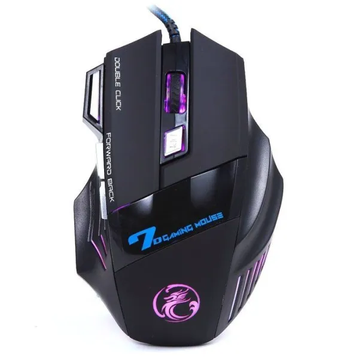

-
Fare
Fare, genellikle avuç içinde tutulan, hareketleri bilgisayar ekranındaki imlecin hareketlerini kontrol eden, bilgi giriş aygıtıdır. Fare modeline göre üzerinde bir veya daha fazla sayıda tuş ve tekerlek bulunabilir. İlk bilgisayar faresi 1964 yılında Douglas Engelbart tarafından yapıldı.
-
Kasa
Bilgisayar kasası, içine yerleştirilecek olan bilgisayar bileşenlerini dışarıdan gelebilecek fiziksel darbelere karşı korur, elektriksel olarak yalıtır, sahip olduğu fanlarla içerideki sıcak havayı dışarı atar.
-
Klavye
Klavye ya da tuş takımı bilgisayarın en önemli giriş ögesidir. Üzerinde harfler, rakamlar, işaretler ve bazı işlevleri bulunan tuşlar vardır.
-
Hoparlör

Hoparlör, elektrik akımı değişimlerini ses titreşimlerine çeviren alettir. Türkçe eş anlamlısı sesucaltan sözcüğüdür. 1920 yıllarında elektrikli ses dalgalarının kaydedilip yayınlanmasına imkân sağlayan buluşlar ortaya çıktı. Bu buluşların neticesinde ilk hoparlör 1924-1925 yıllarında yapılmıştır.
-
Monitör
Monitör, görüntü sergilemek için kullanılan elektronik ya da elektro-mekanik aygıtların genel adıdır. Monitör, başta televizyon ve bilgisayar olmak üzere birçok elektronik cihazın en önemli çıktı aygıtıdır.
-
Kulaklık

Kulaklık, 2 küçük hoparlörün kullanıcının kulağına yakın yerde durmasını sağlayan bir çevre birimidir. Genellikle kullanım amaçları, kullanan kişi dışında başka kişileri rahatsız etmemek, dışarıdaki ortam gürültüsünü önlemek sesi ve basları daha net şekilde algılamak veya kulakları korumaktır.
-
Tarayıcı
Bilgi işlemde tarayıcı, bir resmi, yazılı dokümanı, el yazısını veya bir objeyi analiz ederek sayısal ortama aktaran araç. Günümüzde tarayıcılar genellikle CCD veya CIS algılayıcı kullanmaktadır. Eski davul tarayıcılarda foto çoğaltıcı tüpler de kullanılmıştır.
-
Yazıcı
Yazıcı, elektronik ortamdaki grafik ya da metinleri bir kâğıt üzerine işleyen alettir. Çoğu yazıcı bilgisayara yazıcı kablosu, USB veya RJ45 ile bağlanır. Bazı yazıcılar direkt olarak hafıza kartından, fotoğraf makinesinden ve tarayıcıdan çıktı alabilirler.